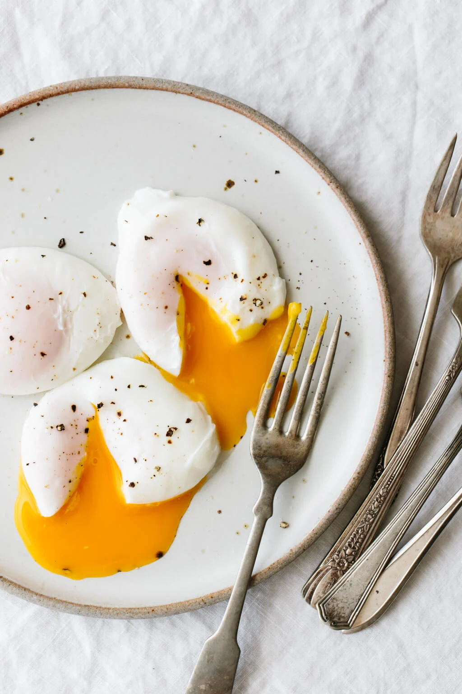

Poached Egg, Nothing More
Have you never made poached egg in your life? Well neither have we! But it's all bout to change with this brand new technique.
If you are tired of making boring ass fried egg or boiled egg, this recipe is for you.

Ingridients
- 1 Teaspoon of vinegar
- 1 Teaspoon of salt
- 2 eggs
Steps
- Fill a bowl with ice
- Fill a saucepan with cold water and place over medium heat
- Break each egg into a separate small ramekin
- Lift poached egg from water using a slotted spoon